方差分析的基本思路是将数据的总变异分解成为已知的若干「可控因素」引起的变异和「随机因素」引起的误差，比较这两者的相对大小。
如果「可控因素」引起的变异明显大于「随机因素」引起的变异，说明「可控因素」引起了不同群体之间的差异。
相反，如果「随机变异」与「可控因素」引起的变异大小相当，则说明「可控因素」和「随机因素」差不多，就不能说明「可控因素」在起作用。
即：
「控制因素」引起的变异大于「随机因素」引起的变异，才能认为「控制因素」引起的变异起了作用。
方差分析的分类
t 检验 vs 方差分析
- t 检验用于比较两个总体的均值是否有显著差异
- 方差分析的目的是比较三个或者三个以上的总体均值是否有显著差异。
方差分析的种类：
- 单因素方差分析
- 多因素主效应方差分析
- 多因素包含交互效应的方差分析（多个因素变量相互作用，导致强者越强，弱者越弱）
方差分析的使用前提
- 线性可加(通常都满足)
方差分析是建立在一定的线性可加模型之上的，所谓线性可加模型是指每个观察值可以被视为若干个线性组成部分之和。也就是因变量的取值是由若干个已知自变量和随机因素影响的。这个条件一般是满足的，因此不用考虑。
- 误差是随机的、彼此独立的、且都服从均数为 0 的正态分布
这要求在分析之前进行正态性检验。
- 亚总体的方差相等
即不同组的方差相等。这样就能将亚总体的组内平方和合并成组间平方和。这要求在进行方差分析之前，检验组间方差是否具有齐性。
理论依据是中心极限定理，因此建议抽取的亚总体样本数量也相等。
依据以上三点，方差分析之前需进行：
- 方差同质性检验，以保证用于比较的不同总体具有大致相同的方差；（SPSS 可自动检验同质性）
- 对因变量进行探索性分析，观察因变量的分布情况；
方差分析的步骤
- 探索因变量的分布，初步确定是否可以进行进行方差分析；
- 进行方差同质性检验，确定不同总体的方差齐性；
对于多个总体平均数的测验仍然和 t 检验一样，需要分为三个步骤：
第一步：对所研究的问题提出一对假设；原假设：相同，备择假设：不完全相同
第二步：在无效假设 𝐻0 为正确的前提下，计算一个统计量；
第三步：根据小概率原理，选择接受还是拒绝原假设 𝐻0，如果拒绝原假设，认为不同总体的均值存在差异，那么还需进行多重比较；多重比较；
单因素方差分析
单因素方差分析是指只有一个自变量的方差分析。从对数据的要求来讲，是一个作为自变量的分类变量（类别不小于 3）和一个连续变量（也可多个连续变量）。
例题1
销售培训中，A,B,C 三组培训后的表现是否有显著差异？
分析
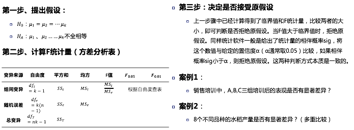
SPSS 工具
首先进行探索性分析，以获得一些描述性统计分析的结果
分析 － 描述统计 － 探索
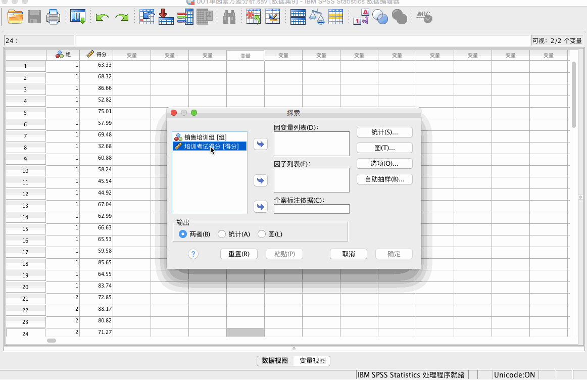
分析 － 比较平均值 － 单因素 ANOVA 分析
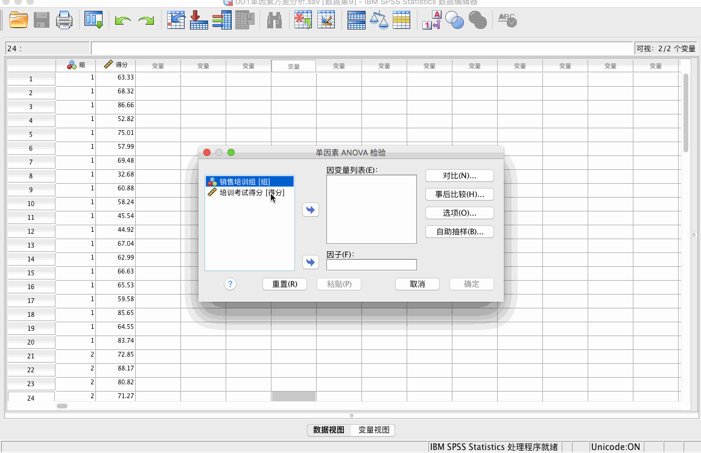
结论
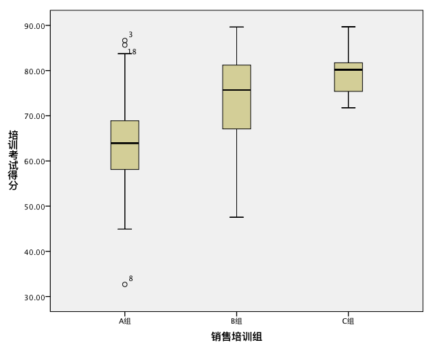
根据探索性分析，我们可以看出 A 组存在很多异常值，C 组中位数较高，A 组中位数较低。
A 组 Q-Q 图表示基本满足正态分布，B 组 Q-Q 图表示有一些偏态，C 组 Q-Q 图表示存在有异常值。数据大体成正态分布，可以做方差分析。
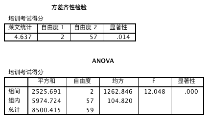
F 值为 12.048，远大于1，P = 0.000 < 0.05，拒绝原假设，即销售培训组培训后得分不完全相同。
但方差齐性检验结果显示，P = 0.014 < 0.05，拒绝原假设，即方差是不齐的。因此，必须使用非参数分析检验，上面的分析均不可靠。
例题2
8个不同品种的水稻产量是否有显著差异？（多重比较）
SPSS 工具
首先进行探索性分析，以获得一些描述性统计分析的结果
分析 － 描述统计 － 探索
方差同质性检验和方差分析：
分析 － 比较平均值 － 单因素 ANOVA 分析
结论
从探索性分析的 Q-Q 图我们可以看出，点基本均匀分布在两侧，因此符合正态分布。
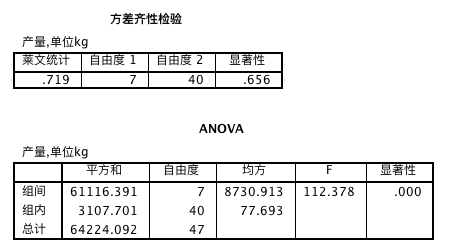
P = 0.656 > 0.05 通过方差齐性检验。
方差分析结果表示 P = 0.000 < 0.05，拒绝原假设，说明水稻产量具有显著性差异。具体哪个组之间存在差异，需要进步进行多重方差分析。
多重方差分析
由于方差分析的原假设为各组均值全相等，假设检验结果拒绝原假设后，得到的结论将是：各组均值不完全相等，那么结果可能就是有的组之间均值有明显差异，而有的组之间没有明显差异，那么到底是哪些组均值之间有明显差异呢？就需要再进行组与组之间的两两比较（多重比较）。
多重比较有多种方法，常用方法的选用的原则是：
- 如果需要将组间较为小的差异找出，就用 S-N-K 法；
- 如果只有当组间差异够大时，才认为有差异，就选用 LSD 法；
- 如果要求介于两种方法之间，则选用 Duncun 法。
例题
同上题，进一步进行两两之间的比较。
SPSS 工具
分析 － 比较平均值 － 单因素 ANOVA 分析
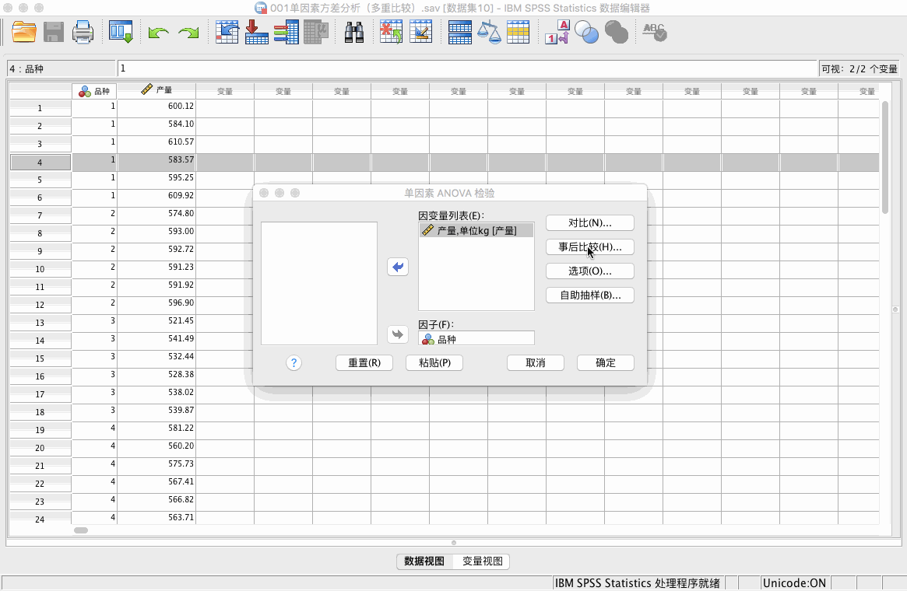
结论
LSD 法：
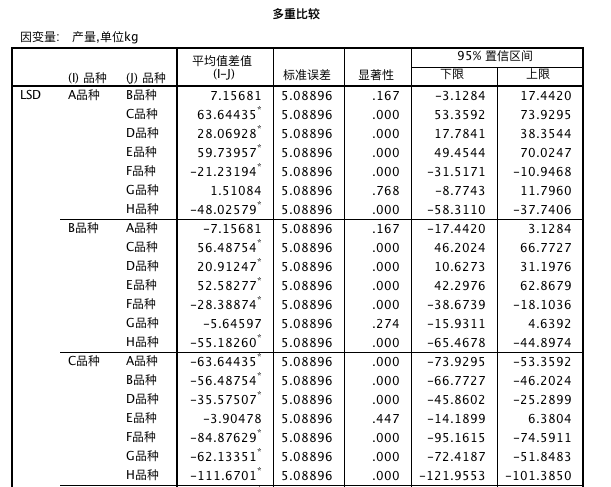
表中的 * 表示显著差异，A 品种与 D、E、F、H 品种差异显著，而与 B、G 品种差异不显著，其他品种类似。
S-N-K 法与邓肯法：
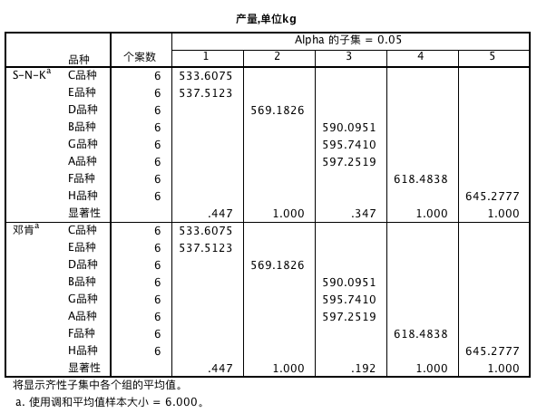
如果第一列中显示数字的品种，表示差异不显著。在不同列中显示品种，表示差异显著。
例如上表中，C 品种与 E 品种差异不显著，B、G、A 品种差异不显著等。
多因素主效应方差分析
多因素方差分析，基本思想和方法与单因素方差分析相似，前提条件仍然是要满足独立、正态、方差齐性，所不同的是在多因素方差分析中，有时会出现交互作用，即多个因素的不同水平交叉搭配对指标产生的影响。
例题
六个水稻品种（A1 ,A2，A3，A4，A5，A6）种在四种不同类型的土壤中（B1 ,B2，B3，B4）。产量数据如下表所示，品种和土壤类型都是固定效应，分析品种和土壤类型对产量的影响。
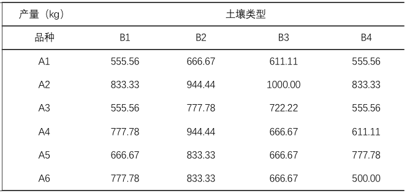
分析
- 在方差分析之前，仍然要验证数据是否可以做方差分析
- 做方差分析与假设检验（三步曲）
- 如果有差异则需要进行两两比较
SPSS 工具
将数据按照每一个变量占据一列的原则录入到SPSS
首先绘制直方图以及进行探索性分析
第一步： 图形 － 图表构建器
第二步： 分析 － 描述统计 － 探索
其次进行方差齐性分析：
第三步： 分析 － 一般线性模型 － 单变量
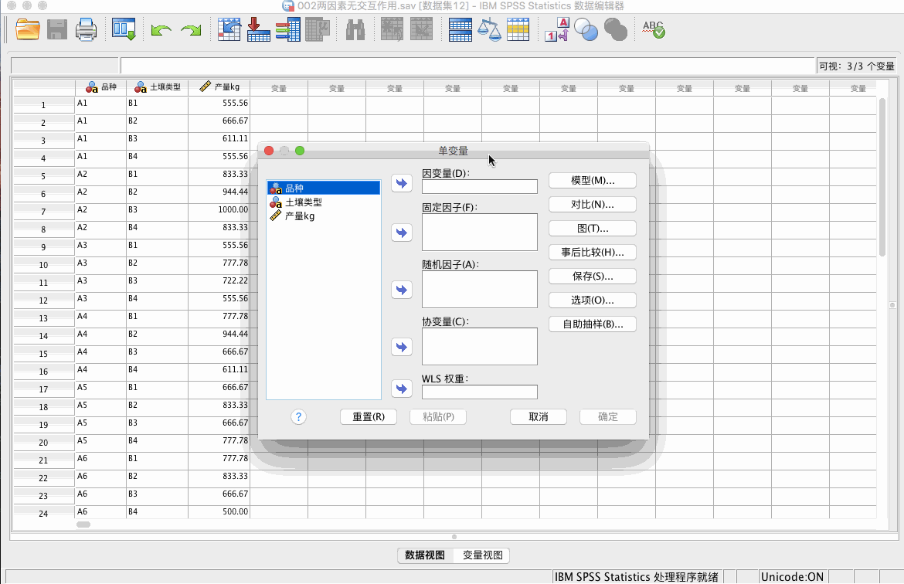
注：做齐性检验时，一次只能放入一个固定因子。
方差分析：
第四步： 分析 － 一般线性模型 － 单变量
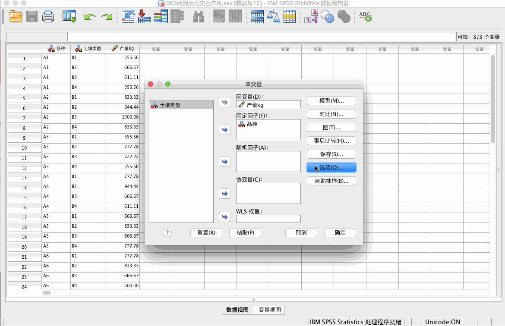
使用邓肯法进行两两比较：
第五步： 分析 － 一般线性模型 － 单变量
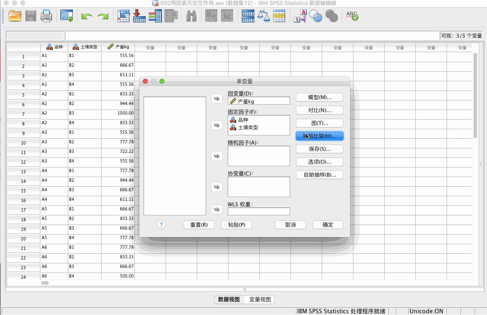
结论
第一步：直方图
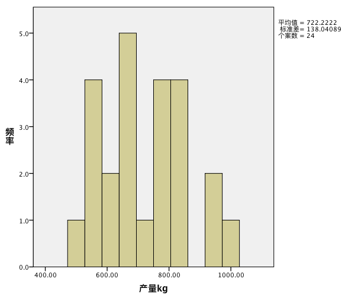
我们发现产量分布并不太符合正态分布，但是也属于两侧低中间高的形状。
第二步：探索性分析
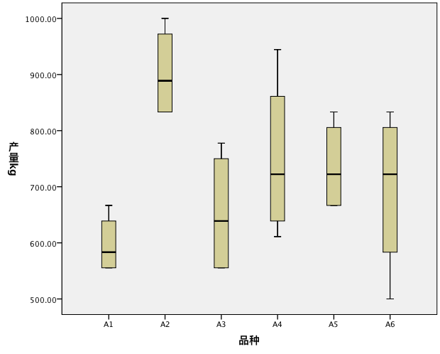
我们发现黑线都处于中间位置，因此可以认为是正态分布的。
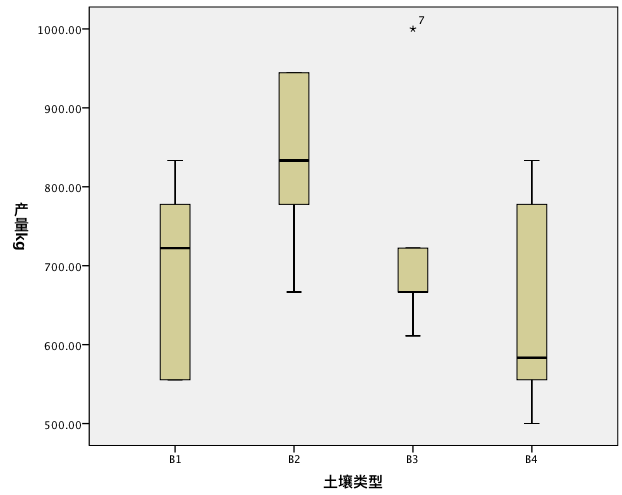
第三个数据可能存在一些问题。
但是方差分析对于正态分布的要求并不太严格，因此也可以进行方差检验。
第三步：方差齐性检验
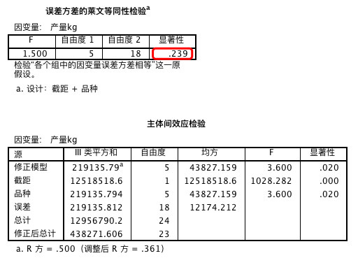
我们发现检验不显著，即方差是齐性的。
第四步：方差分析
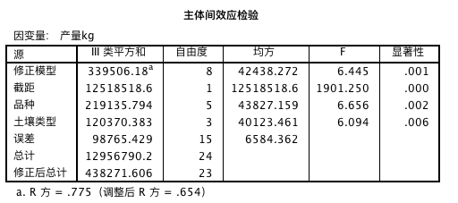
0.001 不同处理之间，差异是显著的。0.006 表示土壤类型是显著的
第五步：两两比较
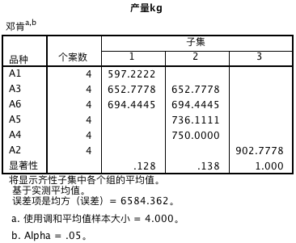
A1、A3、A6 间差异不显著、A3、A5、A6、A4 间差异不显著。（顺序是根据从小到大排列的）
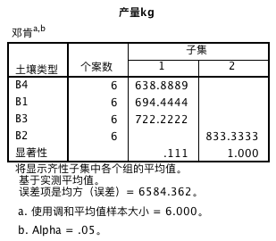
B1、B3、B4 间差异不显著。
固定模型与随机模型
在 SPSS 中，可以在 “分析 － 一般线性模型 － 单变量” 中进行设置：
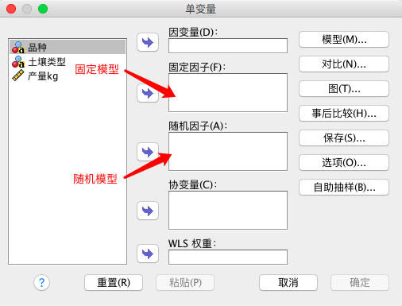
固定模型
当重复进行试验时，因素的水平不变。如农业试验中，比较品种间产量差异时，每次试验都选用固定的几个品种，这种情况在分析数据时，选用固定模型。
随机模型
当重复试验时，因素的水平不一定和上一次相同。还是用农业试验举例，有很多种品种可供选择，每次试验时，都随机选取几个品种，这种情况下，分析数据就需要选择随机模型。
混合模型
混合模型只存在于多因素试验中，多个因素中，既有固定效应又有随机效应，则选择混合模型。如农业试验中，不同次试验中，品种是随机变化的，但是种植这些品种的试验田总是那几块，因此属于混合模型。
多因素包含交互效应的方差分析
交互效应
多个因素对同一个结果都有影响，那么它们在对结果施加影响时，就可能产生交互作用。强者越强就是一种正方向的交互作用。有钱人更有可能在商业上成功，有钱促成了商业的成功。自然界中，更好地作物品种搭配更好地土壤，得到的作物产量也比这两个因素单独起作用时的产量更高。
如果存在多个因素对因变量产生影响，那么它们之间是否存在交互效应呢？
在进行方差分析时，如果我们不确定是否存在交互作用，可以在分析建模时，纳入交互项，即先认为有交互作用，如果最后的模型结果显示交互项统计假设检验不显著，那么再将交互项移除即可。
多因素包含交互效应的方差分析对数据的要求：
记录的数据中，每一个处理下有多个数据。
例题
三个水稻品种（A1 、A2、 A3）种在四种不同的土壤中（B1 、B2 B3 B4），每个组合种了两块田（试验中所有天的面积相同），最终测得水稻的亩产量如下表所示。比较品种、土壤类型对产量是否有显著影响，并分析品种与土壤类型间的交互作用。
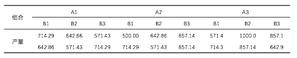
分析
- 在方差分析之前，仍然要验证数据是否可以做方差分析
- 做方差分析与假设检验（三步曲）
- 如果有差异则需要进行两两比较
SPSS 工具
第一步：探索性分析
分析 － 描述统计 － 探索第二步：方差齐性检验
分析 － 一般线性模型 － 单变量
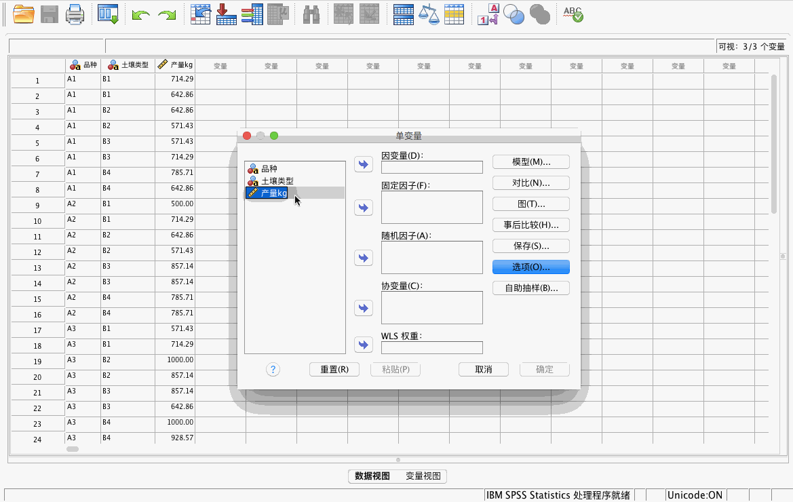
第三步：方差分析，注意此处纳入了交互项
分析 － 一般线性模型 － 单变量
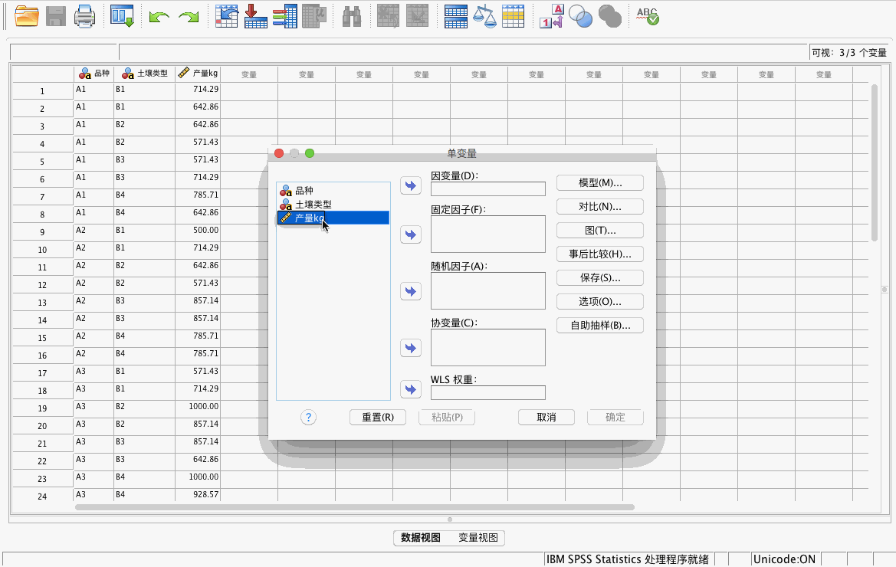
结论
通过探索性分析查看正态分布情况。由于方差分析对于正态分布的要求并不严格，因此在以下分布情况下，也是可以进行方差检验的。
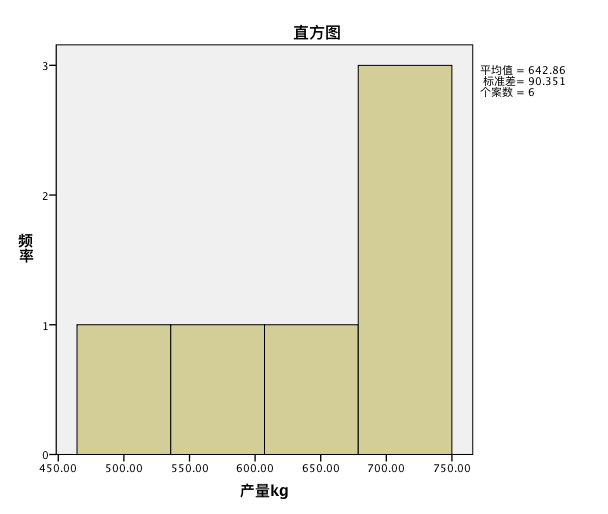
第二步进行方差齐性检验
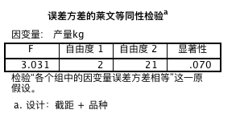
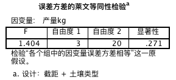
两个自变量的 P 值均大于 0.05，因此均通过了齐性检验。
第三步进行方差分析
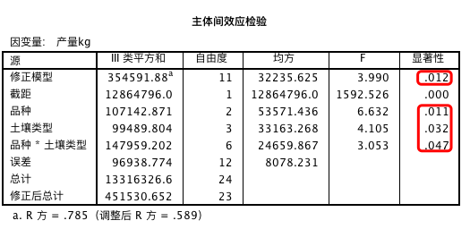
F 值是显著的，三个变量（含交互项）也是显著的，因此应该纳入交互项。说明两个变量作用产生了远高于单个变量的影响。